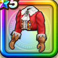

ノーブルコート上
攻略班 6.5点 / 攻撃減耐性+5%混乱耐性+5%怪人系への耐性+3%メラ属性斬撃・体技ダメージ+3%
くわしい特徴
【レベル別習得スキル】 Lv1攻撃減耐性+5% Lv8混乱耐性+5% Lv10さいだいMP+5 Lv15メラ属性斬撃・体技ダメージ+3% Lv18怪人系への耐性+3% Lv20【魔法戦士】守備力+5 Lv23さいだいMP+5 Lv25守備力+7 【限界突破スキル】 1凸幻惑耐性+5% 2凸守備力+5 3凸きようさ+5 4凸さいだいHP+5